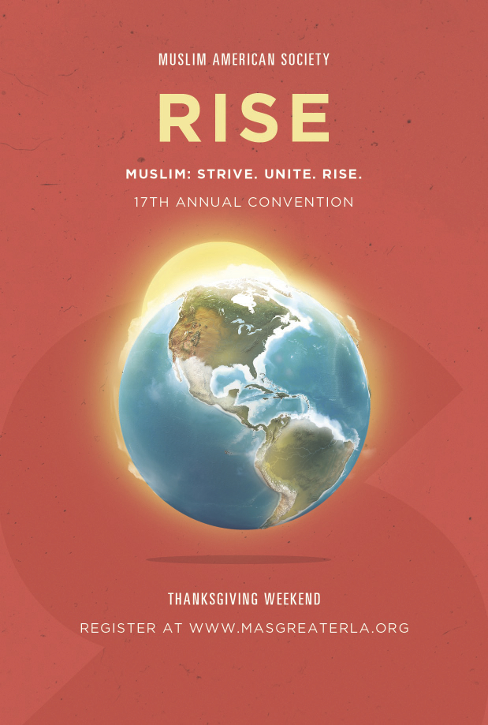

Ilm Seek gives young Muslims the opportunity to travel and visit other communities, get exposed to new ideas, and gain knowledge in areas of Islamic Studies, or any other subject that might benefit their community. The program gives them the opportunity to gain knowledge from world renowned scholars and open their minds to new ideas, all while giving them the chance to put their new skills and knowledge to work benefiting their community.
"Ilm" is the Arabic word for knowledge, and as we know from the Hadith and Quran, knowledge is something that is highly regarded in Islam. By giving these young individuals the opportunity to gain knowledge of the Deen, not only is the Ilm Seek program setting them up for the ultimate success, but all those who support the program as well.
Traveling, meeting new people, seeing new things, and learning from some of the best will plant the seeds for new and innovative ideas in Ilm Seekers. The program is built to have these individuals come home with a mind full of ideas on how they could use the knowledge they've acquired to change, improve, and make a difference in their community.
With Ilm Seekers returning home full of new knowledge and ideas, their communities will now be able to reap the benefit of supporting these individuals. Those selected for the program will not only be developing themselves, but their community as well. The Ilm Seek program aims to accelerate the development of Muslim communities by preparing its young members through travel, the acquisition of knowledge, and the empowerment of developing community driven projects.
Scroll up
Ilm Seekers apply not only to be part of the program, but to receive scholarships for travel and seeking knowledge. In exchange for scholarships, Ilm Seekers will be expected to bring home their newfound knowledge and be ready to work on making a change in their community.
Interested in supporting the future of your community?
"Whoever treads upon a path of knowledge, Allah will guide him to a path of paradise" - Abu Dawud
Traveling for knowledge is something that Muslims have done since the beginning of Islam. Ilm Seek aims to have young Muslims travel to communities, events, and programs outside of their hometowns to seek new knowledge, meet new people, and get exposed to new ideas. Traveling outside of their homes, will also give these Ilm Seekers the opportunity to get educated from means they might never have had access to.
During their travels, Ilm Seekers will gain knowledge mainly in the area of Islamic Studies. However that's not the only subject we want them to focus on. They'll be interacting with people from different communities, attending events that were months or even years in planning, and get exposed to new ideas and things that they might have never though of. We want Ilm Seekers to soak up every ounce of knowledge that they believe will help in further developing their community, whether it be something related to Islam or a new way of running things at their mosque.
Upon returning from their travels, Ilm Seekers will have the opportunity to share what they have learned by performing two things.
Scroll up
Knowledge: While the main focus of the program is currently on Islamic education, Ilm Seekers will be encouraged to seek out knowledge in other areas as well. This might include learning how other Muslim communities run their masjid, new ways of reaching out to people, or even a new samosa recipe. We want you to come home thinking "my mind has been blown" because of all the awesomeness you've learned.
Sisterhood/Brotherhood: Ilm Seekers will travel in groups and be paired into teams. These teams will be required to work together, attending events, and presenting their knowledge together. Through the process of traveling and working together, Ilm Seekers will build a bond between one another that we envision becoming the future of what the Prophet Mohammad (pbuh) once called "Muakha", or brotherhood/sisterhood.
Experience: Not only will Ilm Seekers get the chance to travel, attend events and meet new people. But they'll also gain experience working in a real world setting when they come home and start working on their project. They'll have the chance to take an entrepreneurial mindset on their project and go wild with their ideas. Want to talk about a nice resume boost...how awesome will it be to tell a crowd listening to you speak that you started an epic project in your hometown that became a national sensation?
The Opportunity To Make Things Happen: The trips will be fun, you'll learn a lot, and make some good friends. But the best part is getting the opportunity to make a difference in your community. Ilm Seekers will have the opportunity to put together something that could easily change peoples lives. The project you'll work on when you come home isn't going to be another power point filled with bullet points. This isn't you're boring senior capstone class. We're looking for people that will come home from their travels ready to knock down walls, dream big, and make things happen.
Scroll up
Ilm Seek is currently open to all young Muslims (Sisters and Brothers) in the Tucson community between the ages of 16-30. However those selected for scholarships and the program will show a motivation to learn and want to make a change in their community. These Ilm Seekers should be willing to put their faith in Allah, roll up their sleeves, and get to work on improving not only the Muslim community, but the surrounding ones as well.
Scroll up
Think your ready to expand your mind and improve your community. Apply for the first ever class of Ilm Seekers as we head out to sunny Long Beach, California this November. We'll be attending this years MAS convention. Check out the details below.
If accepted to the program, $350 (before scholarships) gets you:
***This is the cost of the trip before any scholarships are awarded. So please, don't let money prevent you from applying. InshAllah we'll be able to grant scholarships based on both financial need and merit.